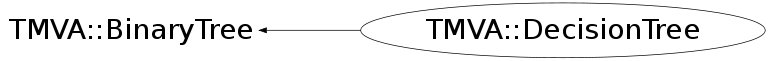

class TMVA::DecisionTree: public TMVA::BinaryTree
Implementation of a Decision Tree In a decision tree successive decision nodes are used to categorize the events out of the sample as either signal or background. Each node uses only a single discriminating variable to decide if the event is signal-like ("goes right") or background-like ("goes left"). This forms a tree like structure with "baskets" at the end (leave nodes), and an event is classified as either signal or background according to whether the basket where it ends up has been classified signal or background during the training. Training of a decision tree is the process to define the "cut criteria" for each node. The training starts with the root node. Here one takes the full training event sample and selects the variable and corresponding cut value that gives the best separation between signal and background at this stage. Using this cut criterion, the sample is then divided into two subsamples, a signal-like (right) and a background-like (left) sample. Two new nodes are then created for each of the two sub-samples and they are constructed using the same mechanism as described for the root node. The devision is stopped once a certain node has reached either a minimum number of events, or a minimum or maximum signal purity. These leave nodes are then called "signal" or "background" if they contain more signal respective background events from the training sample.
Function Members (Methods)
public:
protected:
| void | TMVA::BinaryTree::DeleteNode(TMVA::Node*) |
| TMVA::MsgLogger& | TMVA::BinaryTree::Log() const |
private:
| Double_t | SamplePurity(TMVA::DecisionTree::EventList eventSample) |
Data Members
protected:
| UInt_t | TMVA::BinaryTree::fDepth | maximal depth in tree reached |
| UInt_t | TMVA::BinaryTree::fNNodes | total number of nodes in the tree (counted) |
| TMVA::Node* | TMVA::BinaryTree::fRoot | the root node of the tree |
| static TMVA::MsgLogger* | TMVA::BinaryTree::fgLogger | message logger, static to save resources |
private:
| TMVA::Types::EAnalysisType | fAnalysisType | kClassification(=0=false) or kRegression(=1=true) |
| UInt_t | fMaxDepth | max depth |
| Double_t | fMinLinCorrForFisher | the minimum linear correlation between two variables demanded for use in fisher criterium in node splitting |
| Double_t | fMinSepGain | min number of separation gain to perform node splitting |
| Double_t | fMinSize | min number of events in node |
| TRandom3* | fMyTrandom | random number generator for randomised trees |
| Int_t | fNCuts | number of grid point in variable cut scans |
| UInt_t | fNNodesMax | max # of nodes |
| Double_t | fNodePurityLimit | purity limit to decide whether a node is signal |
| UInt_t | fNvars | number of variables used to separate S and B |
| Bool_t | fPairNegWeightsInNode | randomly pair miscl. ev. with neg. and pos. weights in node and don't boost them |
| TMVA::DecisionTree::EPruneMethod | fPruneMethod | method used for prunig |
| Double_t | fPruneStrength | a parameter to set the "amount" of pruning..needs to be adjusted |
| Bool_t | fRandomisedTree | choose at each node splitting a random set of variables |
| TMVA::RegressionVariance* | fRegType | the separation crition used in Regression |
| TMVA::SeparationBase* | fSepType | the separation crition |
| UInt_t | fSigClass | class which is treated as signal when building the tree |
| Int_t | fTreeID | just an ID number given to the tree.. makes debugging easier as tree knows who he is. |
| Bool_t | fUseExclusiveVars | individual variables already used in fisher criterium are not anymore analysed individually for node splitting |
| Bool_t | fUseFisherCuts | use multivariate splits using the Fisher criterium |
| Int_t | fUseNvars | the number of variables used in randomised trees; |
| Bool_t | fUsePoissonNvars | use "fUseNvars" not as fixed number but as mean of a possion distr. in each split |
| Bool_t | fUseSearchTree | cut scan done with binary trees or simple event loop. |
| vector<Double_t> | fVariableImportance | the relative importance of the different variables |
| static const Int_t | fgDebugLevel | debug level determining some printout/control plots etc. |
| static const Int_t | fgRandomSeed | set nonzero for debugging and zero for random seeds |
Class Charts
{kind=link}
{kind=link}
{kind=link}
{kind=link}

Function documentation
DecisionTree()
default constructor using the GiniIndex as separation criterion, no restrictions on minium number of events in a leave note or the separation gain in the node splitting
DecisionTree(TMVA::SeparationBase* sepType, Int_t minSize, Int_t nCuts, UInt_t cls = 0, Bool_t randomisedTree = kFALSE, Int_t useNvars = 0, Bool_t usePoissonNvars = kFALSE, UInt_t nNodesMax = 999999, UInt_t nMaxDepth = 9999999, Int_t iSeed = fgRandomSeed, Float_t purityLimit = 0.5, Int_t treeID = 0)
constructor specifying the separation type, the min number of events in a no that is still subjected to further splitting, the number of bins in the grid used in applying the cut for the node splitting.
DecisionTree(const TMVA::DecisionTree& d)
copy constructor that creates a true copy, i.e. a completely independent tree the node copy will recursively copy all the nodes
void SetParentTreeInNodes(TMVA::Node* n = NULL)
descend a tree to find all its leaf nodes, fill max depth reached in the tree at the same time.
TMVA::DecisionTree* CreateFromXML(void* node, UInt_t tmva_Version_Code = TMVA_VERSION_CODE)
re-create a new tree (decision tree or search tree) from XML
UInt_t BuildTree(const TMVA::DecisionTree::EventList& eventSample, TMVA::DecisionTreeNode* node = NULL)
building the decision tree by recursively calling the splitting of one (root-) node into two daughter nodes (returns the number of nodes)
void FillTree(TMVA::DecisionTree::EventList& eventSample)
fill the existing the decision tree structure by filling event in from the top node and see where they happen to end up
void FillEvent(TMVA::Event& event, TMVA::DecisionTreeNode* node)
fill the existing the decision tree structure by filling event in from the top node and see where they happen to end up
UInt_t CleanTree(TMVA::DecisionTreeNode* node = NULL)
remove those last splits that result in two leaf nodes that
are both of the type (i.e. both signal or both background)
this of course is only a reasonable thing to do when you use
"YesOrNo" leafs, while it might loose s.th. if you use the
purity information in the nodes.
--> hence I don't call it automatically in the tree building
Double_t PruneTree(TMVA::DecisionTree::EventList* validationSample = NULL)
prune (get rid of internal nodes) the Decision tree to avoid overtraining
serveral different pruning methods can be applied as selected by the
variable "fPruneMethod".
void ApplyValidationSample(const TMVA::DecisionTree::EventList* validationSample) const
run the validation sample through the (pruned) tree and fill in the nodes
the variables NSValidation and NBValidadtion (i.e. how many of the Signal
and Background events from the validation sample. This is then later used
when asking for the "tree quality" ..
Double_t TestPrunedTreeQuality(const TMVA::DecisionTreeNode* dt = NULL, Int_t mode = 0) const
return the misclassification rate of a pruned tree a "pruned tree" may have set the variable "IsTerminal" to "arbitrary" at any node, hence this tree quality testing will stop there, hence test the pruned tree (while the full tree is still in place for normal/later use)
void CheckEventWithPrunedTree(const TMVA::Event& ) const
pass a single validation event throught a pruned decision tree
on the way down the tree, fill in all the "intermediate" information
that would normally be there from training.
Double_t GetSumWeights(const TMVA::DecisionTree::EventList* validationSample) const
calculate the normalization factor for a pruning validation sample
UInt_t CountLeafNodes(TMVA::Node* n = NULL)
return the number of terminal nodes in the sub-tree below Node n
void PruneNodeInPlace(TMVA::DecisionTreeNode* node)
prune a node temporaily (without actually deleting its decendants
which allows testing the pruned tree quality for many different
pruning stages without "touching" the tree.
TMVA::Node* GetNode(ULong_t sequence, UInt_t depth)
retrieve node from the tree. Its position (up to a maximal tree depth of 64)
is coded as a sequence of left-right moves starting from the root, coded as
0-1 bit patterns stored in the "long-integer" (i.e. 0:left ; 1:right
Double_t TrainNodeFast(const TMVA::DecisionTree::EventList& eventSample, TMVA::DecisionTreeNode* node)
Decide how to split a node using one of the variables that gives the best separation of signal/background. In order to do this, for each variable a scan of the different cut values in a grid (grid = fNCuts) is performed and the resulting separation gains are compared. in addition to the individual variables, one can also ask for a fisher discriminant being built out of (some) of the variables and used as a possible multivariate split.
std::vector<Double_t> GetFisherCoefficients(const TMVA::DecisionTree::EventList& eventSample, UInt_t nFisherVars, UInt_t* mapVarInFisher)
calculate the fisher coefficients for the event sample and the variables used
Double_t TrainNodeFull(const TMVA::DecisionTree::EventList& eventSample, TMVA::DecisionTreeNode* node)
TMVA::DecisionTreeNode* GetEventNode(const TMVA::Event& e) const
get the pointer to the leaf node where a particular event ends up in... (used in gradient boosting)
Double_t CheckEvent(const TMVA::Event& , Bool_t UseYesNoLeaf = kFALSE) const
the event e is put into the decision tree (starting at the root node) and the output is NodeType (signal) or (background) of the final node (basket) in which the given events ends up. I.e. the result of the classification if the event for this decision tree.
Double_t SamplePurity(TMVA::DecisionTree::EventList eventSample)
calculates the purity S/(S+B) of a given event sample
vector< Double_t > GetVariableImportance()
Return the relative variable importance, normalized to all variables together having the importance 1. The importance in evaluated as the total separation-gain that this variable had in the decision trees (weighted by the number of events)
DecisionTreeNode* GetRoot() const
Retrieves the address of the root node
{ return dynamic_cast<TMVA::DecisionTreeNode*>(fRoot); }Double_t TrainNode(const TMVA::DecisionTree::EventList& eventSample, TMVA::DecisionTreeNode* node)
determine the way how a node is split (which variable, which cut value)
{ return TrainNodeFast( eventSample, node ); }void SetPruneMethod(TMVA::DecisionTree::EPruneMethod m = kCostComplexityPruning)
{ fPruneMethod = m; }void SetPruneStrength(Double_t p)
manage the pruning strength parameter (iff < 0 -> automate the pruning process)
{ fPruneStrength = p; }